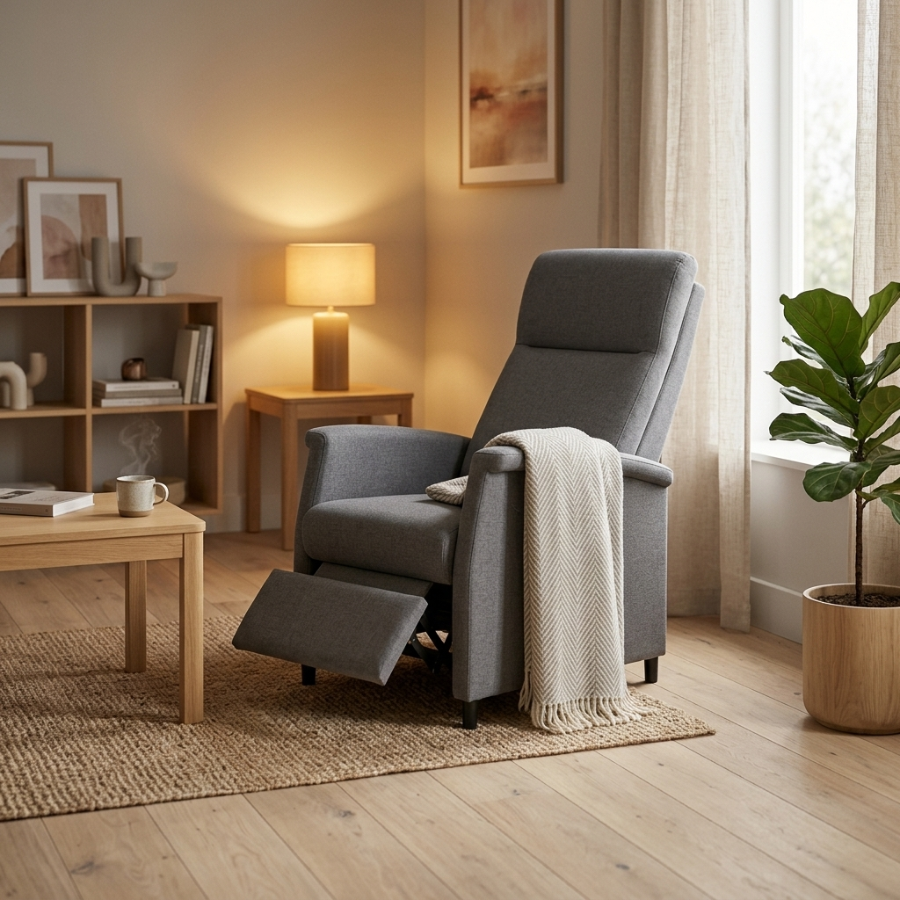
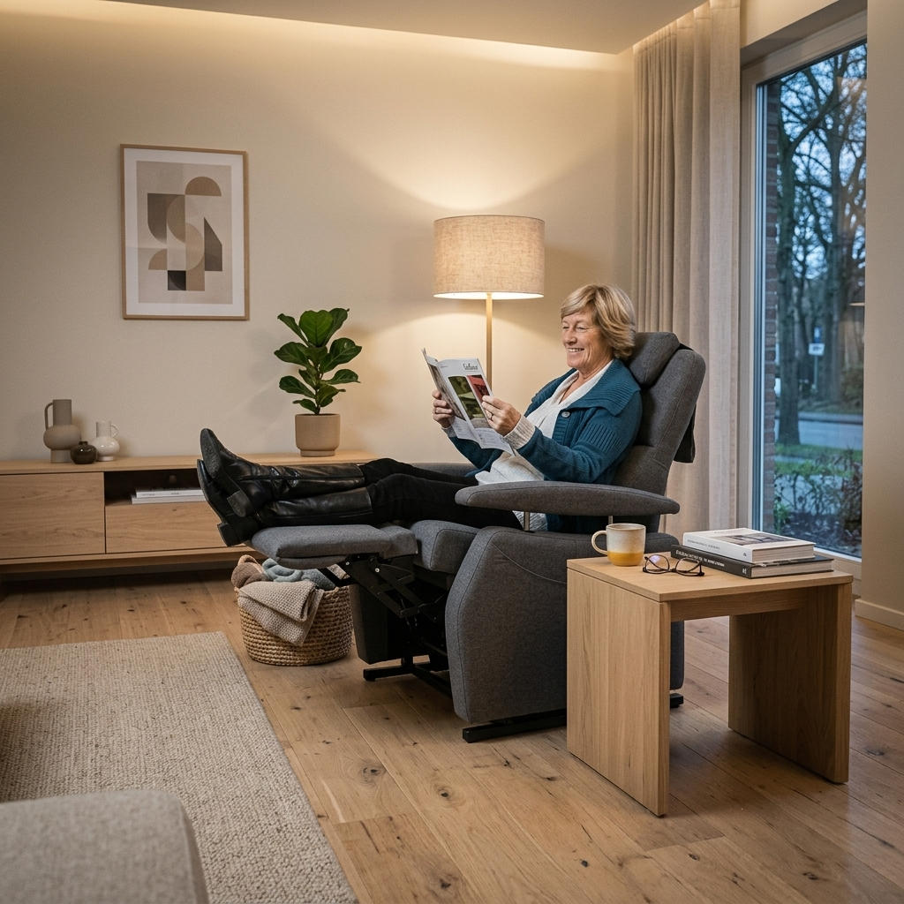

Zoekt u een ergonomische sta-op stoel of relaxfauteuil van Fitform in Dordrecht of omstreken? Als officieel gecertificeerd dealer beschikt staopstoelen.nl (onderdeel van Schipper Compact Wonen) over rechtstreekse fabriekslijnen met de Nederlandse fabrikant Wellco/Fitform. In onze ruime showroom aan de Merwedestraat 239 in Dordrecht kunt u de complete Fitform collectie in alle rust ervaren en proefzitten.
Dé Erkende Fitform Dealer in Dordrecht & Drechtsteden
Als gecertificeerd dealer beschikt Bewegingstechnoloog Geertjan over rechtstreekse fabriekslijnen met Wellco/Fitform. Uw stoel wordt exact volgens het officiële Fitform ergonomie-protocol ingemeten op zithoogte, zitdiepte en armleggerhoogte, inclusief volledige fabrieksgarantie en 100% originele onderdelen.
Geertjan Klein Haneveld
Gediplomeerd Bewegingstechnoloog • Fitform Specialist
Geertjan is onze vaste bewegingstechnoloog en specialist op het gebied van ergonomie en gezond zitten. Geen Fitform stoel verlaat onze showroom zonder dat deze door Geertjan tot op de centimeter nauwkeurig is ingesteld op uw ideale zithoogte, zitdiepte en armleggerhoogte. Zo bent u verzekerd van een stoel die als gegoten zit en pijnklachten effectief ontlast.
Fitform Maatwerk Ervaren in Dordrecht
Kom proefzitten in onze showroom aan de Merwedestraat 239 in Dordrecht. Bewegingstechnoloog Geertjan meet uw stoel gratis en tot op de millimeter nauwkeurig in.
Wat Maakt Ons Dé Fitform Specialist in Dordrecht?
Een Fitform sta-op stoel is medisch en ergonomisch de absolute top. Maar een stoel is pas écht ergonomisch als hij nauwkeurig is afgesteld op úw unieke lichaam.
Advies door Bewegingstechnoloog
Geertjan is gediplomeerd bewegingstechnoloog. Hij analyseert uw zithouding, wervelkolom en opstamechaniek voor maximale verlichting van pijnklachten.
Originele Fabriekslijnen
Als officieel dealer bestellen wij rechtstreeks bij de Fitform fabriek in Best (Wellco). U geniet van volledige fabrieksgarantie en 100% originele onderdelen.
Nieuw & Duurzaam Gereviseerd
Wilt u topkwaliteit Fitform voor een vriendelijkere prijs? Wij hebben een actuele voorraad gereviseerde Fitform Vario stoelen, technisch 100% nagelopen met garantie.
Gratis Bezorgd & Afgesteld
Onze eigen bezorger brengt uw Fitform stoel met de bezorgbus in uw woonkamer, sluit hem aan en stelt hem direct op uw lichaamsmaten af.
Ervaar Deze Fitform Fauteuils in Onze Showroom
In onze showroom aan de Merwedestraat 239 in Dordrecht hebben wij meerdere Fitform modellen speelklaar staan om zelf het zitcomfort en de soepele opstahulp te ervaren.

Fitform 570 Vario
De bekendste en meest veelzijdige sta-op stoel van Nederland. Voorzien van 3 motoren: voetenbank, rugleuning en kanteling werken volledig onafhankelijk voor optimale ontlasting.

Fitform 580 Elevo
Een slanke, moderne designfauteuil waarbij de sta-op functie onzichtbaar in het onderstel is verwerkt. Eigentijdse armleuningen en hoogwaardige stoffen of leersoorten.

Fitform 574 Vario
De robuuste variant met gestoffeerde dichte zijwanden voor een behaaglijk en geborgen gevoel. Uitstekend geschikt voor mensen die extra zijdelingse steun zoeken.
De 4 Cruciale Maten van Fitform
Een standaardstoel past bijna niemand perfect. In onze showroom in Dordrecht meten we deze 4 punten exact voor u in:
Zithoogte
Gemeten van de knieholte tot de onderzijde van de hak. Uw voeten rusten vlak op de vloer zonder afknelling van de bloedsomloop in de bovenbenen.
Zitdiepte
De rugleuning sluit perfect aan tegen uw onderrug, terwijl er precies een handbreedte ruimte blijft tussen de zitting en uw knieholte.
Armleggerhoogte
Uw onderarmen rusten ontspannen op de armleuningen in een hoek van 90 graden, waardoor nek-, schouder- en bovenrugspieren volledig kunnen ontspannen.
Lendensteun
De natuurlijke S-kromming van uw wervelkolom wordt nauwkeurig ondersteund met een instelbare lendenpomp om onderrugklachten te voorkomen.
Kom Rustig Proefzitten aan de Merwedestraat 239
Onze showroom is gevestigd in hetzelfde pand als Schipper Compact Wonen aan de Merwedestraat 239 in Dordrecht. Bij ons vindt u een ontspannen sfeer met verse koffie, gratis parkeren voor de deur en deskundig advies.
Dinsdag t/m Vrijdag: 10:00 - 16:00 uur
Maandag & Zaterdag: Op afspraak (ook buiten vaste uren mogelijk)

Vragen over Fitform in Dordrecht
De officiële Fitform dealer in Dordrecht is staopstoelen.nl, gevestigd in het pand van Schipper Compact Wonen aan de Merwedestraat 239 in Dordrecht. U kunt gratis direct voor de deur parkeren en er is een gediplomeerd bewegingstechnoloog aanwezig om u te adviseren.
Als erkend Fitform dealer werken wij met rechtstreekse fabriekslijnen naar fabrikant Wellco/Fitform. Hierdoor bent u verzekerd van 100% originele onderdelen, officiële fabrieksgarantie en specialistische maatwerkinmeting volgens het Fitform ergonomie-protocol door onze Bewegingstechnoloog Geertjan.
Ja! Wij hebben een continu wisselend assortiment van technisch volledig gereviseerde Fitform occasions (zoals de Fitform 570 Vario en 574 Vario). Deze stoelen zijn technisch 100% nagelopen, gereinigd, voorzien van garantie en worden net zoals een nieuwe stoel exact op uw lichaamsmaten ingesteld.
Jazeker! In onze showroom aan de Merwedestraat 239 in Dordrecht kunt u alle Fitform modellen in alle rust uitproberen. Bewegingstechnoloog Geertjan meet uw ideale zithoogte, zitdiepte en armleggerhoogte gratis en vrijblijvend in.
Nadat u in onze showroom uw ideale stoel heeft uitgekozen, bezorgen wij deze gratis en vakkundig met onze eigen bezorgbus bij u thuis in Dordrecht en de hele regio (o.a. Zwijndrecht, Papendrecht, Sliedrecht, Rotterdam, Barendrecht). Onze bezorger zet de stoel op zijn plek, controleert de afstelling en legt de bediening rustig uit.
Wilt u het comfort van Fitform zelf ervaren?
U bent van harte welkom in onze showroom aan de Merwedestraat 239 in Dordrecht om onze Fitform fauteuils vrijblijvend te proberen. Na aankoop bezorgen en installeren wij de stoel geheel gratis en vakkundig bij u thuis.